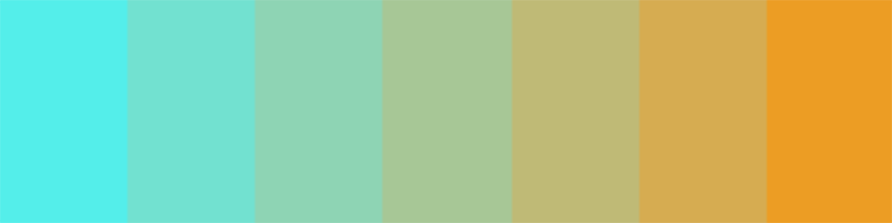

Chroma
Chroma is a tool for exploring color theory, inspired by the experiments of Bauhaus educator Josef Albers. Explore color by controlling the four corners, and consider their relation and combination.
One phenomenon to explore is halation. This is when colors in an array appear to bleed into one another, creating an effect beyond that of an individual color. You can see this concept illustrated below.
The intermediary colors begin to appear as gradients, because of their surroundings. Do you notice that each color appears more orange at its left edge, and cyan at its right edge? Use the tool to explore this idea and discover other properties of color.
© 2018 Stephen Lindberg